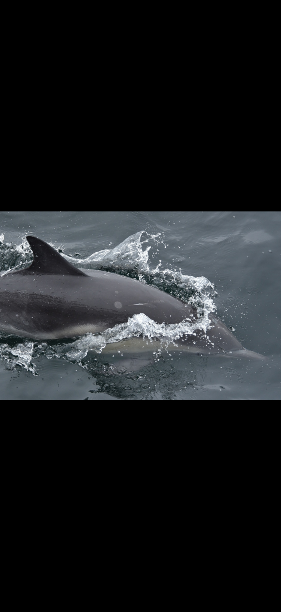
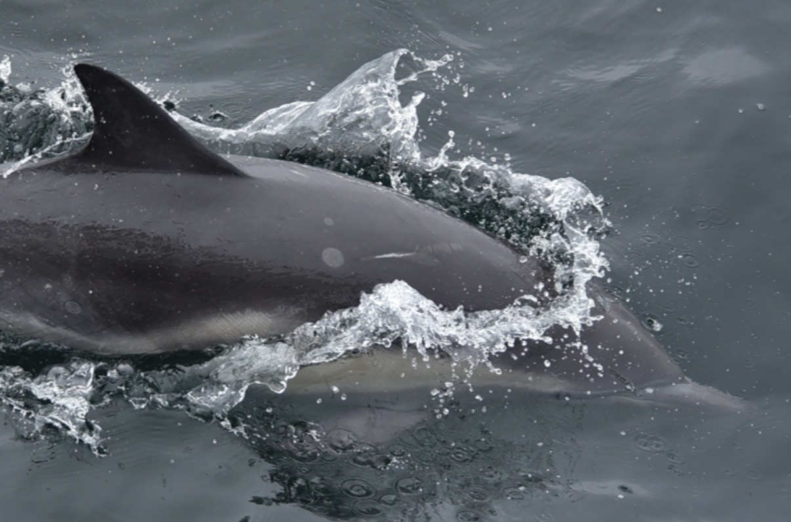
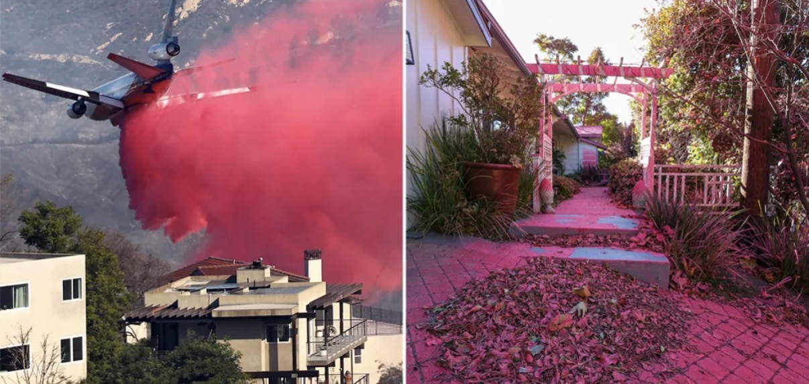

Quick Guide

Wildfires can affect the ocean during the fire through smoke and ash, and again later when rain carries ash-enriched soil and contaminants downstream.
- Smoke and ash can reduce sunlight and deliver organic and inorganic particles.
- Nutrients can fertilize plankton, but large pulses can destabilize food webs or favor harmful blooms.
- Heavy metals, PFAS and other contaminants can enter aquatic food webs.
- Fire-suppression chemicals can add nutrients and contaminants to runoff.
1. Smoke & Ash

Wildfire smoke carries particulate matter whose composition depends on what burned. The source Field Note notes carbon, phosphorus, nitrogen, iron and heavy metals in ash, with urban fires potentially adding combustion products from plastics, fuels and other manufactured materials.
2. Sunlight, pH & Plankton
Haze and suspended ash can reduce sunlight. Dissolved organic matter and nutrient inputs can alter bacterioplankton, phytoplankton and zooplankton responses, creating effects that can cascade through the marine food web.
3. Fire Retardants
Fire retardants are useful for suppressing fires, but concentrated material reaching water can add nutrients such as ammonium compounds and may carry metals. Excess nutrient loading can contribute to poor water quality and harmful algal blooms.
4. The Second Pulse: Rain & Runoff

After a fire, winter rains can wash ash, nutrients, metals and other material from burned watersheds into streams and coastal waters. The biological result depends on the amount delivered, local conditions and which plankton species respond.
5. Kelp & Coastal Food Webs
KelpFire is a collaborative research program studying how wildfire-related materials affect California kelp ecosystems. The topic is important because changes at the plankton and kelp level can propagate through invertebrates, fish, seabirds and marine mammals.
6. Marine Mammals
The Field Note identifies concerns including contaminant bioaccumulation, immune effects, prey changes, habitat degradation, stress and reproductive effects. It also emphasizes that marine ecosystems are complex and individual events may have multiple interacting causes.
Guide Talking Points
Visitor question: Can a wildfire on land affect animals in the ocean?
Short answer: Yes. Smoke and ash can reach the ocean while a fire is burning, and later rain can wash nutrients and contaminants from burned land into coastal water. Those inputs can change plankton, water quality and the food web.
Useful connection: A coastal fire can produce two pulses—airborne deposition during the fire and watershed runoff after rain.
References / Further Reading
This guide was created from the Aug 20–26, 2026 Naturalist Topic Highlight. Its source list includes research in Frontiers in Marine Science, Marine Mammal Science, Limnology & Oceanography, Environmental Science & Technology Letters, Nature Communications and other journals, plus UCLA reporting on the KelpFire program.
Open original Naturalist Field Note →Install / Offline Help
On iPhone Safari, use Share → Add to Home Screen. If an older version persists, return to the Hub and reopen this guide while online.